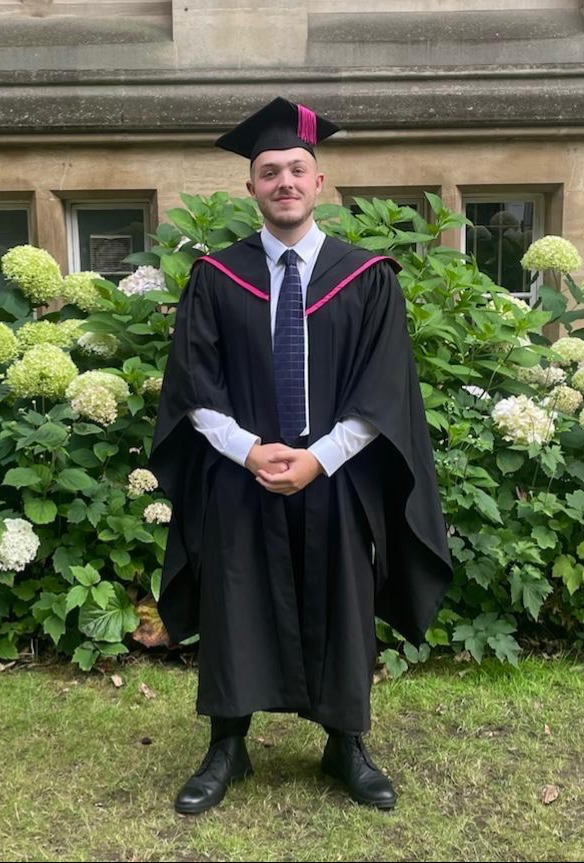

My name is Jay Ferrier. I have recently graduated from Nottingham Trent University after 3 years completing
my BSc(Hons) Computer Science course. I specialise in software development and engineering, as well as Artificial Intelligence
with interests mostly in different forms of Pose Estimation which was also the area that my Final Year Project/Dissertation focused on.
My name is Jay Ferrier. I have recently graduated from Nottingham Trent University after 3 years completing
my BSc(Hons) Computer Science course. I specialise in software development and engineering, as well as Artificial Intelligence
with interests mostly in different forms of Pose Estimation which was also the area that my Final Year Project/Dissertation focused on.
I have always had a passion for computer science and programming since primary school, when I attended computing lessons for children, and I attained an OCR
Level 2 Diploma in IT skills at a young age. This lead on to me completing my GCSE Computer Science outside of school in my own time and cost due to the course
being removed at my school. Then I completed my A levels in Computer Science too and finally completed my Bachelor's Degree in Computer Science.
Education

 Nottingham Trent
Nottingham Trent
University
Computer Science Bsc(Hons) - 2022-2025
Award:
2nd Class Honours-1st Division (High)
Relevant Courses:
o Information and Database Engineering (High 1st)
o Final Year Project (Low 1st)
o Advanced Software Engineering (Low 1st)
o Systems Software (Low 1st)
o Advanced Analysis and Design (High 2.1)
o Advanced Artificial Intelligence (High 2.1)
o Software Design and Implementation (Mid 2.1)
o Service-Centric & Cloud Computing (Mid 2.1)
Invictus
Sixth Form
2020-2022
o A Levels Computer Science
o A Levels Business Studies
o A Levels Maths
GCSE
2020-2022
o GCSE Maths
o GCSE English
o GCSE Computer Science
(Computer Science was completed outside of school in my own time and at my own cost due to course removal)
Extra Qualifications
o Valid Clean Drivers Licence and my own transport
o OCR Level 2 Diploma in IT User Skills (ITQ)
o First Aid Skills from Lifeguarding Certification
Skills
Programming Languages
o Java
o Python
o C++ and C#
o HTML, CSS, and Javascript
o Haskell
o SQL
o Dart
Experience With:
o Object Orientated Programming and APIs
o Docker, Cloud technologies, and Nodejs
o Databases, MariaDB, and MySQL
o Git and Version Control
o Visual Studio, Visual Studio Code, and Android Studio
Transferable Skills
o Paired Programming from ClockIn Joint Personal Project
o Teamwork from working in a kitchen with other members of staff to ensure good customer service.
o Experience of working under pressure in a busy kitchen environment.
o Colleague communication skills from working in a kitchen environment with a restaurant team.
o Client communication skills from contact with garden maintenance jobs.
o Excellent work ethic from working within a busy restaurant environment.
o Teamwork skills from various group courseworks including the development of a mobile application for smart fridges
Work Experience
Simworx ltd | Work Experience
2019
o Week of work experience in motion simulation technology
o Safety in the technology and engineering industry
o Marketing and photo editing
o Software and Hardware Engineering
Round Oak | Kitchen Staff
Aug 2019 to Aug 2022
• For the first two years:
o Washing up plates, cutlery, etc.
o Helping chef staff by moving stock, processing stock ,etc.
o Help with food preparation.
o Cleaning
• For the third year:
o Promotion from pot washer to chef.
o Chef work, such as cooking food and setting up plates to be sent to customers.
o Cleaning
Garden Maintenance Labourer
June 2023 to August 2023
May 2024 to September 2024
o Slab laying, Jet washing, Digging, Lawn mowing, Landscaping, Painting
o Communication with clients to ensure correct specifications of work and friendly relations.
Interests
Video Games
Since a young age, video games have been one of my favourite hobbies.
This interest eventually led me to Computer Science to learn how to make my own games.
This resulted in me learning how to code in different languages and areas and eventually to persuing programming
and computer science for my education.
My personal favourite genres have always been open world and adventure style games such
as Red Dead Redemption 2 and No Man Sky and my favourite, the Soulsbourne genre including Dark Souls 1 to 3 and Elden Ring.
As seen in the image, I have also had an interest in more earlier examples of Video games including Arcade games such as
Pacman, Centipede and Mario.
Formula 1
One of my interests is Formula 1 that I gained interest in thanks to a flatmate watching it often around me. As shown in the picture my favourite team is Mercedes and their three drivers, George Russel, Kimi Antonelli, and Valtteri Bottas. This is my first year watching since Imola, with my favourite track and race this year being Silverstone, with a dream to attend a race their one day.
Snowsports
When I was young, my family and I went on various holidays to Ski resorts in France and Austria, notably Alpe D'Huez.
I am able to Ski well up to Black runs when I was around 14/15 Years Old.
After a few years break (due to Covid), a recent trip to Austria's Obertauern (as shown in the photo) allowed me to learn Snowboarding as well, which I now prefer.
And after a a few days training I elevated my skills for solo runs.
In the future, I wish to improve my skills in Snowboarding to achieve new techniques and tricks and to try snow parks too, with an eventual dream to ski in Japan.
Powerlifting
Throughout my childhood, I have often taken part in different sports including Tennis, Snowsports, and Hockey.
During my first year of University I joined the campus gym and started to build muscle, and eventually, in my second year
joined the NTU Powerlifting Society for my final two years. Now, after a 3 month haitus due to a broken ankle, I have started to regain my
skills and strength in the sport, with more of a focus on bodybuilding now.
Guitar and Music
During my earlier school years I took on Guitar lessons with a focus on Acoustic. After a break for a few years for exams and other interests,
I purchased an electric guitar and started relearning and regaining my skills in the instrument.
My taste in music are often varied from Indie such as Two Door Cinema Club and The Royston Club to Rock such as Oasis and Queen to my favourites Laufey and Beabadoobee.
I have attended gigs and concerts including Oasis's 2025 Tour to Piri and Maisi and varying tribute acts.